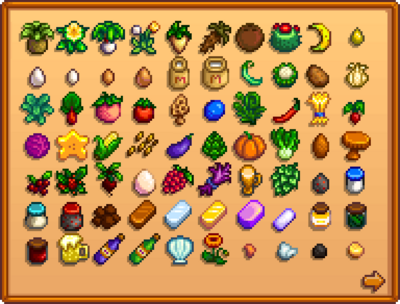
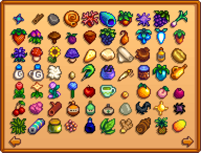
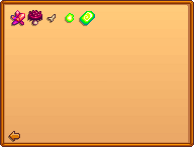

Spring
n Spring, the grass is green. Pink petals blow through the air on windy days.
Summer
In Summer, grass remains green, although noticeably yellower.
Fall
Is the third season. Some of the most valuable crops can grow during Fall.
Winter
Overall, with plant growth stopped, Winter can become a challenging season for farmers.

Crops are plants that are grown from seeds to be harvested for the purpose of profit,
food, or gifting. Generally, each crop is seasonal. It can be planted only during its
designated season, and when seasons change (after the 28th day), the crop will wither and die.
Multi-season crops (i.e.,Ancient Fruit, Coffee Bean, Corn, Sunflower, and Wheat), however,
will continue to grow during all specified seasons.
If planting on the first of a season, a 5-day crop will be ready for harvest on day 6, not day 5. In this case,
the number may be thought of as the number of nights required to grow the crop.
Fertilizer and the Agriculturist Profession are not taken into account on this page, but the effects can be viewed
on individual crop pages.
Crops must be watered every day for maximum growth. If unwatered for a day, a crop will not grow. Unwatered crops
do not die, but they will not grow either.
If a seed is planted into unwatered soil and not watered the same day, it will not grow that night. Growth will
start the following night. The grow times on this page assume the seeds are watered the day they are planted.
Planting after midnight does not impose a penalty (it still counts as having been planted on the current day).

On the 1st of each season, all crops that are no longer in season will wither and die, leaving behind a dead crop. When a dead crop is left behind at the start of a season it will keep the soil it was planted on tilled, which can reduce the amount of manual tilling and watering that needs to be done at the start of a season. Dead crops can be removed with a scythe. Multi-season crops that are still in season (i.e., corn planted in summer when transitioning into fall) will not wither and will simply continue to grow. Fully grown crops that are ready to harvest will wither and die when moving to a new season, however.

Shipping allows the player to sell items by placing them into a Shipping Bin or Mini-Shipping Bin. Gold is received after going to sleep for the night.
Iridium quality items have the highest value, followed by gold, silver, and regular quality items, in that order. The amount of gold received from shipping is the same as when selling to a merchant. The main difference is that merchants will pay immediately, while the money received from shipping is given the next day. Also, not all items can be sold using both methods: some items can be sold using only the shipping bin; other items that cannot be placed in the shipping bin can be sold to merchants (notably, weapons can be sold to the Adventurer's Guild). Items sold to merchants are not included in the statistics on the Collection tab and do not count towards shipping-specific Achievements.
The shipping bin opens its lid when the player approaches it. To ship an item (or stack of items), approach the shipping bin and "use" it (right-click on it), then left-click on the item in inventory. Alternatively, select an item in inventory, approach the shipping bin, and left-click on the bin.
If a mistake is made and the wrong item is put in the shipping bin, "use" the bin at any time during the same day to display the last item. Click on that item to add it back into inventory. Only the last item shipped can be retrieved.
Shown below is the Shipping Collection tab of the player menu. The game keeps track of which of the shown items are shipped and how many.
  